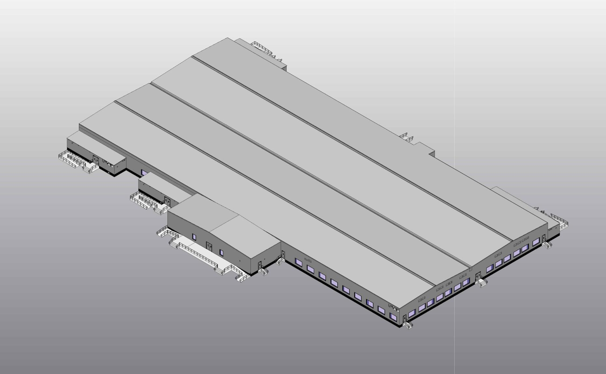
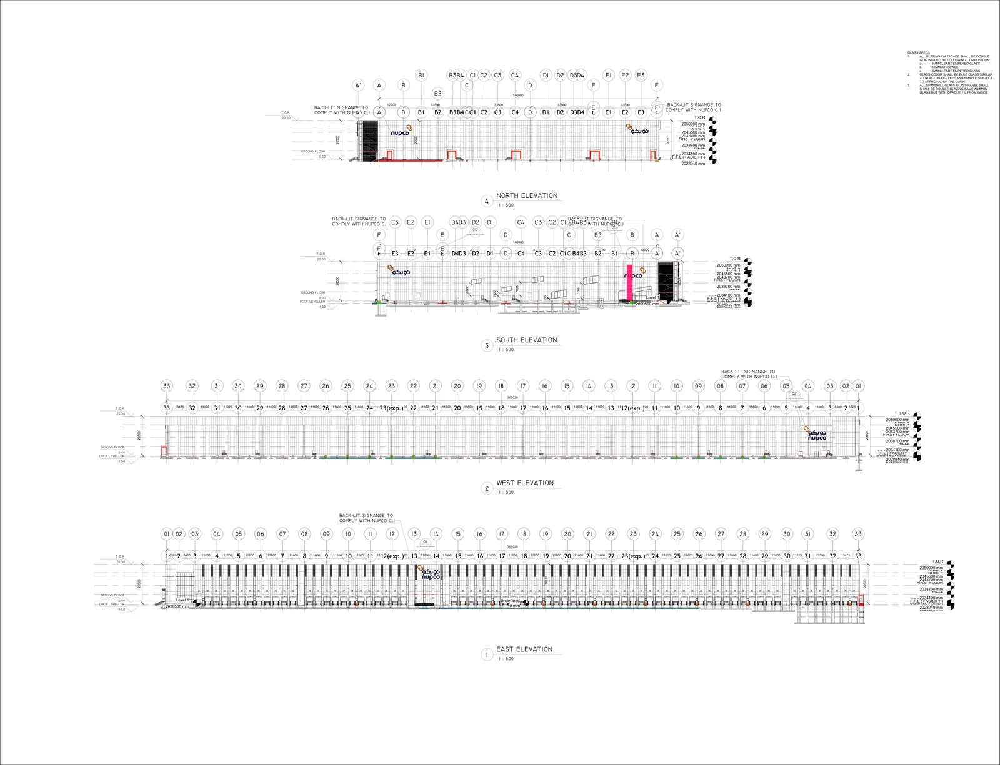
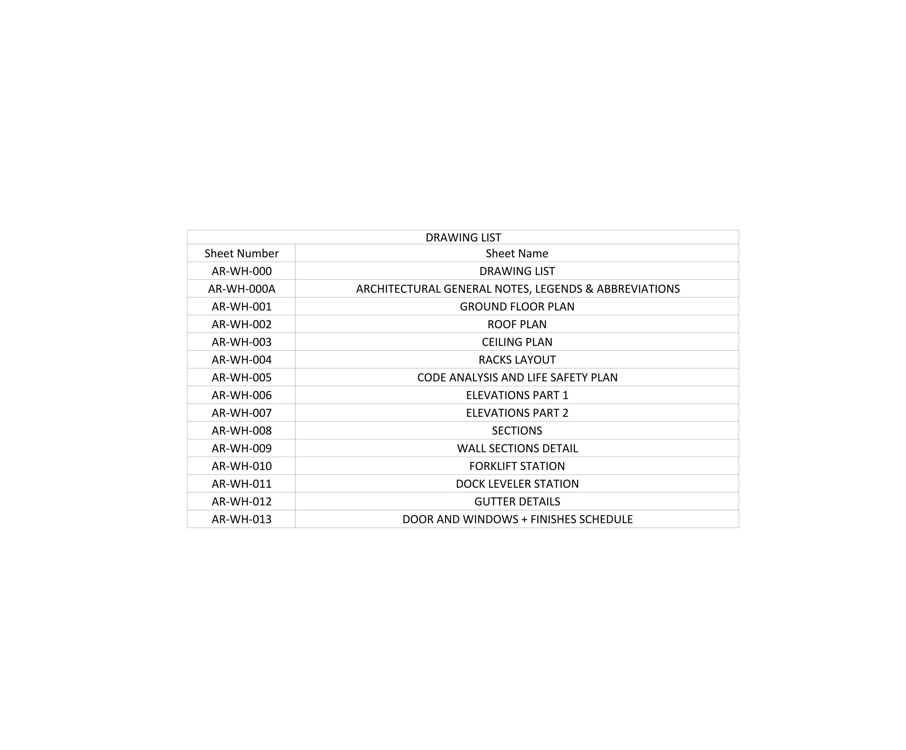
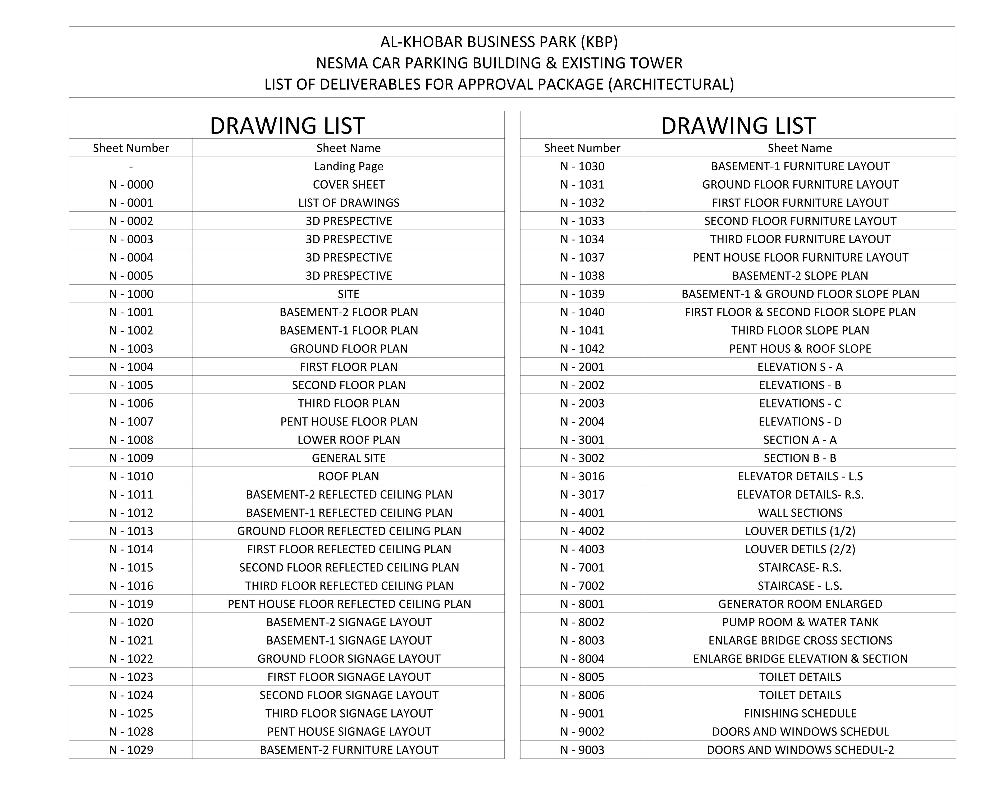
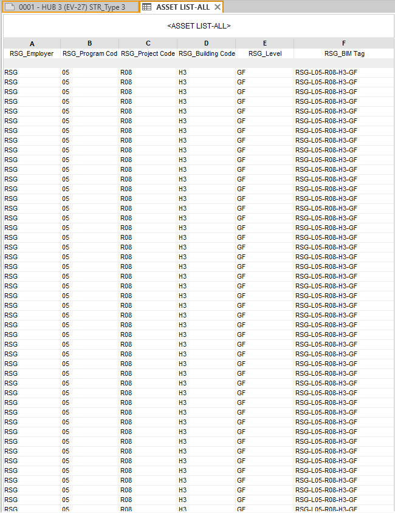

Qiddiya Project
Architectural BIM work for the Qiddiya Construction Workers Village.
FocusArchitectural BIMDeliveryModeling · Technical Delivery
View project →Architecture BIM Modeler specializing in Revit, multidisciplinary coordination and BIM automation.

Selected projects highlighting BIM modeling, coordination and technical delivery.
Architectural BIM work for the Qiddiya Construction Workers Village.
Multi-building BIM work including Dining Facility, Sports Center and Professional Village.

Multi-building BIM project prepared for several building packages and image galleries.

Industrial BIM work including Warehouse and HCL Tank Farm buildings.

Architectural BIM modeling, detailing and documentation for a multi-level parking facility.

Coastal village BIM and technical documentation.
A focused mix of architectural modeling, multidisciplinary coordination, technical documentation and workflow automation.
Architectural model development in Revit with attention to coordination, information quality and downstream deliverables.
Multidisciplinary review using coordinated BIM workflows, clash detection and model-based communication.
Drawing, schedule and technical-output workflows that connect model information to clear project deliverables.
Reusable automation workflows for repetitive Revit tasks and engineering productivity.
The value is not the software logo—it is how the tool supports modeling, coordination, documentation and automation.
Architectural BIM modeling, documentation and coordinated model workflows.
Multidisciplinary coordination, clash review and 4D-oriented project workflows.
Automation of repetitive BIM tasks and reusable Revit productivity workflows.
2D technical documentation and drawing support alongside BIM delivery.
Six selected credentials aligned with BIM management, coordination, automation and cloud collaboration.
I connect architectural thinking with BIM technology to produce coordinated models, structured information, and reusable project workflows.
I’m Komail Jaffar Al Senan, an Architecture BIM Modeler and BIM Specialist working across Revit, Navisworks, Dynamo, multidisciplinary coordination and Revit automation. My focus is coordinated BIM delivery and reusable workflows for AEC teams.
For BIM collaboration, Revit automation, and engineering technology projects.